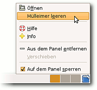

Papierkorb
Dieser Artikel wurde für die folgenden Ubuntu-Versionen getestet:
Ubuntu 14.04 Trusty Tahr
Zum Verständnis dieses Artikels sind folgende Seiten hilfreich:
 Um ein versehentliches Löschen von Dateien und Ordnern zu verhindern, gibt es auch unter Linux einen Mülleimer bzw. einen Papierkorb. Wenn man über einen Dateimanager Dateien löscht, so werden sie nicht sofort von der Festplatte gelöscht, sondern in einen Papierkorb verschoben, welchen man dann bei Bedarf leeren kann. Erst nach der Leerung sind die Dateien wirklich von der Festplatte gelöscht.
Um ein versehentliches Löschen von Dateien und Ordnern zu verhindern, gibt es auch unter Linux einen Mülleimer bzw. einen Papierkorb. Wenn man über einen Dateimanager Dateien löscht, so werden sie nicht sofort von der Festplatte gelöscht, sondern in einen Papierkorb verschoben, welchen man dann bei Bedarf leeren kann. Erst nach der Leerung sind die Dateien wirklich von der Festplatte gelöscht.
Für Netzlaufwerke, sowie im Heimnetzwerk freigegebene Ordner, die mithilfe von Samba oder SFTP eingebunden wurden, steht kein Papierkorb zur Verfügung. Wenn man dort versucht eine Datei in den Papierkorb zu verschieben, dann teilt der Dateimanager einem mit, dass dies nicht möglich sei und bietet als einzige Möglichkeit die endgültige Löschung an.
Dieser Artikel beschäftigt sich sowohl mit der Nutzung des Papierkorbs über einen Dateimanager, der Möglichkeit, auf der Kommandozeile einen Papierkorb zu nutzen, als auch mit der genauen Ordnerstruktur des Papierkorbs. Wer eigene Dateien sicher und endgültig löschen möchte, findet im Artikel Daten sicher löschen weitere Informationen.
Funktionsweise¶
Jeder Benutzer des Systems hat seinen eigenen Papierkorb. Dieser befindet sich im Ordner ~/.local/share/Trash/files. Damit die Dateien nur umbenannt und nicht komplett verschoben werden müssen, haben Partitionen ihren eigenen Papierkorb im Ordner .Trash-XXXX, wobei XXXX die Benutzer-ID (UID) des jeweiligen Benutzers ist (z.B. 1000). Dieser Ordner wird beim ersten Löschen angelegt. Voraussetzung ist, dass der Benutzer auf dieser Partition über Schreibrechte verfügt. Dieses Verhalten trifft auch auf externe Massenspeicher wie beispielsweise USB-Sticks zu.
Beim Verschieben einer Datei in den Papierkorb werden dort nicht nur die Datei selber, sondern auch der Ursprungsort und das Datum der Löschung der Datei gespeichert. Dadurch können die Dateien bei der Wiederherstellung wieder an ihren ursprünglichen Platz verschoben werden.
Experten-Info:
Ein Verschieben wird in der Regel nicht durch ein tatsächliches Verschieben des Dateiinhaltes vorgenommen. Physikalisch bleibt der Dateiinhalt an seinem ursprünglichen Platz. Was lediglich geändert wird, ist der Pfadname der Datei im Index des Dateisystems.
Grafische Dateimanager¶
Informationen und weitere Besonderheiten der einzelnen Dateimanager findet man in den jeweiligen Artikeln:
Unity/GNOME-Shell: Nautilus
KDE: Dolphin
LXDE: PCMan File Manager
MATE: Caja
Xfce: Thunar
Datei in den Papierkorb verschieben¶
Möchte man eine bestimmte Datei oder einen bestimmten Ordner in einem grafischen Dateimanager in den Papierkorb verschieben, dann reicht es aus, diese zu markieren und über das Kontextmenü  und "In den Papierkorb verschieben" auszuwählen. Alternativ (statt das Kontextmenü aufzurufen) kann man auch die
Entf -Taste drücken.
und "In den Papierkorb verschieben" auszuwählen. Alternativ (statt das Kontextmenü aufzurufen) kann man auch die
Entf -Taste drücken.
Datei direkt löschen¶
Ist man sich hingegen sicher, dass man eine Datei nie mehr benötigen wird, kann man sie nach dem Markieren in fast allen Dateimanagern durch Drücken der Tastenkombination ⇧ + Entf direkt löschen. Dadurch wird der Papierkorb nicht benutzt und der belegte Festplattenspeicher komplett frei gegeben.
Die einzige Ausnahme ist der Dateimanager PCManFM. Dieser stellt diese Funktion nur dann im Kontextmenü zur Verfügung, wenn bei geöffnetem Kontextmenü die Taste
⇧ gedrückt wird.
Papierkorb leeren¶

Die Dateimanager der Desktop-Umgebungen zeigen bei Klick  auf den Papierkorb das virtuelle Verzeichnis trash:/ an. Unter dieser Adresse werden alle verfügbaren Trash-Verzeichnisse zusammengefasst, also auch Verzeichnisse auf anderen eingebundenen Datenträgern. Wo die Verzeichnisse der einzelnen Papierkörbe liegen, kann im Abschnitt Speicherort Papierkorb nachgelesen werden.
auf den Papierkorb das virtuelle Verzeichnis trash:/ an. Unter dieser Adresse werden alle verfügbaren Trash-Verzeichnisse zusammengefasst, also auch Verzeichnisse auf anderen eingebundenen Datenträgern. Wo die Verzeichnisse der einzelnen Papierkörbe liegen, kann im Abschnitt Speicherort Papierkorb nachgelesen werden.
Über das Kontextmenü des Papiermüllsymbols lässt sich der komplette Papierkorb leeren. Zu beachten ist, dass dadurch auch die Papierkörbe von allen eingebundenen Datenträgern geleert werden. Möchte man nur einzelne Dateien aus dem Papierkorb löschen, kann man dies über "Löschen" im Kontextmenü der jeweiligen Datei machen.
Hinweis:
Gelöschte Dateien auf Datenträgern wie z.B. USB-Sticks, die zu diesem Zeitpunkt nicht eingebunden sind, bleiben erhalten.
Dateien wiederherstellen¶
Man kann eine einzelne Datei oder einen kompletten Ordner wiederherstellen, indem man im geöffneten Papierkorb über das Kontextmenü "Wiederherstellen" auswählt. Bei Wiederherstellen erscheint die Datei oder der Ordner automatisch wieder an dem Ort, an dem sie ursprünglich gelöscht wurde. Hat man in der Zwischenzeit auch das Verzeichnis entfernt, in der die Datei gespeichert war, so wird automatisch auch die Verzeichnisstruktur wiederhergestellt.
Kommandozeile¶
Terminalprogramme (zum Beispiel rm) kennen keinen Papierkorb und damit können gelöschte Dateien nur sehr schwierig wiederhergestellt werden, siehe dazu Datenrettung. Möchte man auch auf der Kommandozeile einen Papierkorb benutzen und die Dateien nicht sofort löschen, so muss folgendes Paket installiert [1] werden:
trash-cli (universe)
 mit apturl
mit apturl
Paketliste zum Kopieren:
sudo apt-get install trash-cli
sudo aptitude install trash-cli
Danach lassen sich der Papierkorb in einem Terminal [2] folgende Befehle nutzen:
| Befehl | Beschreibung |
| trash DATEI | Eine Datei in den Papierkorb des angemeldeten Benutzers verschieben |
| trash-list | Alle Dateien des Papierkorbs auflisten |
| restore-trash | Dateien aus dem Papierkorb des angemeldeten Benutzers wieder herstellen 1 |
| trash-empty [TAGE] | Papierkorb des angemeldeten Benutzers leeren 2 |
1 Interaktiver Befehl: Listet alle Dateien des Papierkorbs nummeriert auf und fragt dann nach der Nummer der wiederherzustellenden Datei.
2 Als Parameter lässt sich eine Anzahl an Tagen angeben: alle Dateien, die älter als x Tage sind, werden gelöscht.
Eine weitere Möglichkeit ist die Nutzung von safe-rm.
Speicherort Papierkorb¶
Wo genau eine in den Papierkorb verschobene Datei liegt, hängt von mehreren Faktoren ab. Ausschlaggebend ist, auf welcher Partition die Datei lag, ob sie auf einem externes Medium gespeichert war oder ob sie sich auf einem Netzlaufwerk befand.
Benutzerverzeichnis¶
Dateien, die auf der Partition, in dem auch das eigene Homeverzeichnis liegt, gespeichert waren, befindet sie sich im Papierkorb des eigenen Benutzerverzeichnis. Der Pfad lautet wie folgt:
~/.local/share/Trash/
In diesem Verzeichnis befinden sich weitere Unterverzeichnisse:
~/.local/share/Trash/files - hier liegen die gelöschten Dateien
~/.local/share/Trash/info - in diesem Ordner werden Wiederherstellungsinformationen wie Ursprungsort und Löschdatum gespeichert
~/.local/share/Trash/expunged - wenn man einen Ordner gelöscht hat, den man besitzt, aber in diesem Ordner Dateien liegen, die man nicht besitzt, werden diese Dateien in diesen Order verschoben. Wie man auch solche Dateien löscht, steht im Abschnitt Problembehebung.
Andere Partitionen¶
Die Dateien, die auf einer anderen Partition gespeichert waren, wurden auf der jeweiligen Partition im Ordner EINHÄNGEPUNKT/.Trash-XXXX/ abgelegt. Dieser Ordner ist genauso wie der lokale Papierkorb aufgebaut. Die Zahl am Ende ist dabei die Benutzer-ID (UID). Jeder Benutzer des Systems bekommt einen eigenen Papierkorb.
Problembehebung¶
Verwirrende Bezeichnungen in grafischen Oberflächen¶
Aufgrund der falschen Verwendung des Wort „Löschen“ in grafischen Benutzeroberflächen (GUI) kommt es manchmal zu Missverständnissen, wenn über „In den Papierkorb verschieben“ gesprochen wird, jedoch „Löschen“ oder umgekehrt gesagt bzw. geschrieben wird. Um diese Problematik zu beheben oder zumindest abzuschwächen, sollte man möglichst genau beschreiben, ob man etwas gelöscht oder nur in den Papierkorb verschoben hat.
Inhalt des Papierkorbs löschen¶
Um die Dateien aus dem Papierkorb zu löschen, für die man keine Zugriffsrechte hat, muss man in einem Terminal[2] folgenden Befehl mit Root-Rechten[3] ausführen:
sudo rm -rf ~/.local/share/Trash/*
Achtung!
Mit diesem Befehl wird der gesamte Inhalt des Papierkorbs unwiderruflich gelöscht!
Alternativ kann man auch nur einen Teil löschen:
sudo rm -rf ~/.local/share/Trash/expunged/*
Links¶
safe-rm - eine Alternative zum Löschen auf der Kommandozeile
rmtrash
 - Wrapper für die Befehle rm und rmdir
- Wrapper für die Befehle rm und rmdirLöschen via Papierkorb im Terminal - Diskussion im Forum
- Erstellt mit Inyoka
-
 2004 – 2017 ubuntuusers.de • Einige Rechte vorbehalten
2004 – 2017 ubuntuusers.de • Einige Rechte vorbehalten
Lizenz • Kontakt • Datenschutz • Impressum • Serverstatus -
Serverhousing gespendet von